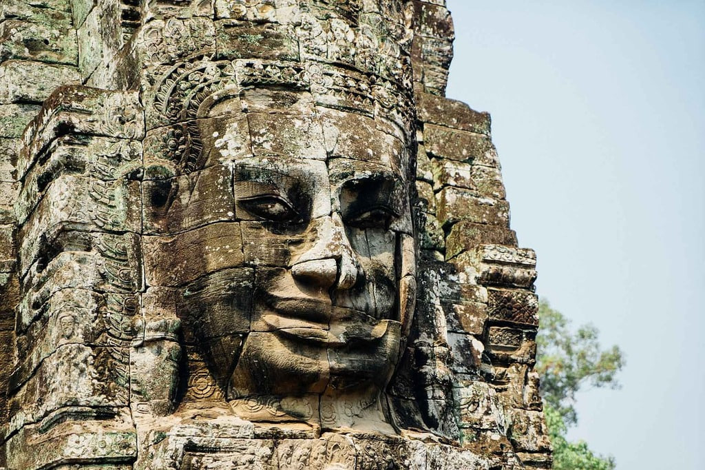
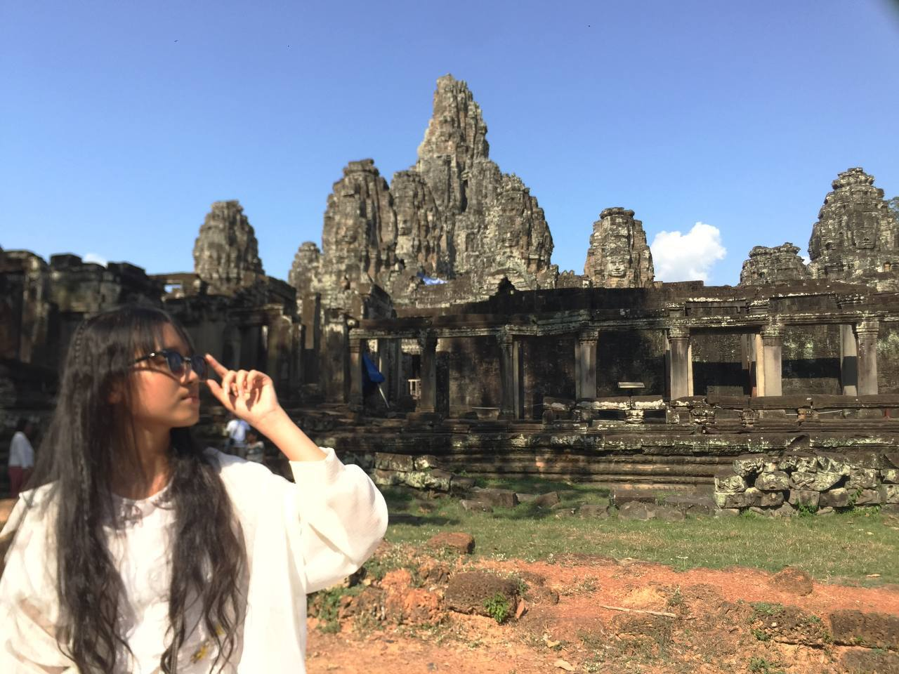

Bayon Temple
Bayon Temple is located in Siem Reap province. It is best known for its smiling stone faces carved on all sides of each tower.


Bayon Temple is located in Siem Reap province. It is best known for its smiling stone faces carved on all sides of each tower.

